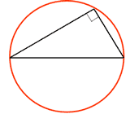

The line segment AC is the diameter of the semicircle. The inscribed angle is formed by drawing a line from each end of the diameter to any point on the semicircle. No matter where you do this, the angle formed is always 90°. Drag the point B and convince yourself this is so. This is true regardless of the size of the semicircle. Drag points A and C to see that this is true.
The triangle formed by the diameter and the inscribed angle (triangle ABC above) is always a right triangle.
This is a particular case of Thales Theorem, which applies to an entire circle, not just a semicircle.

Thales Theorem states that any diameter of a circle subtends a right angle to any point on the circle. (see figure on right).